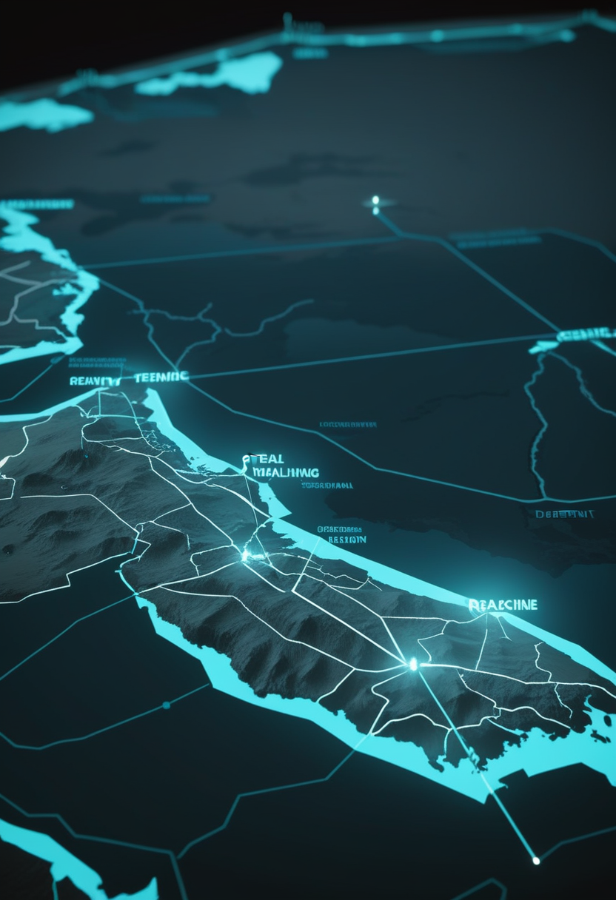
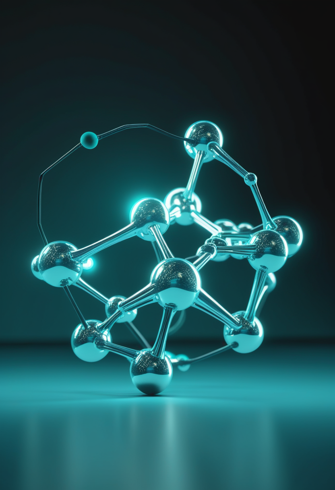
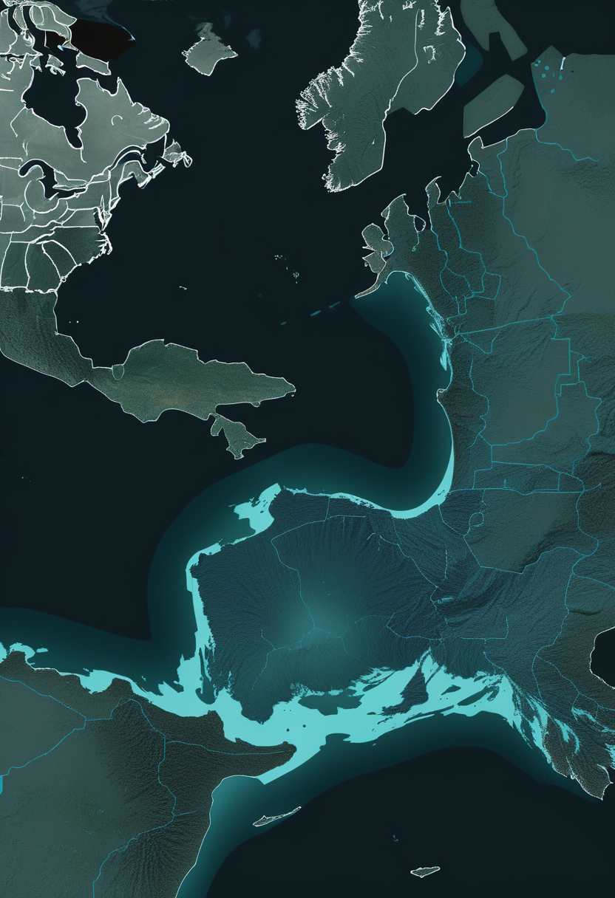
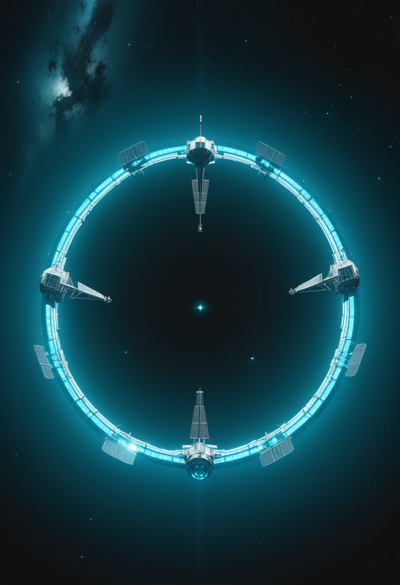

10/29号の続報 ― 臨時閣僚会合の開催と提案内容までは既報、合意内容は未報道だった。10/28の会合でカセヤ所長は確定10,172例・死亡4,932人を示し、調べた31か国中で備えが十分なのは3か国のみという現状を踏まえ、国境は開けたまま監視を強める合意に至った。自由の章ではNeuralinkのALS参加者が毎分75語の音声出力を達成したことと、Blindsightのヒトでの結果が依然未確認であること、Precision Neuroscienceの米国外初拠点アブダビを届ける。畏敬の章ではIBMの量子チップ接続とESAのガリレオ衛星拡張を、命の章では既存薬ミフェプリストンのSMAマウスでの前臨床データを、美の章では脳デジタルツインのロードマップ論文とウェストミンスター寺院のローマ石棺に眠る1000年前の修道院長説を取り上げる。
10/29号の続報 ― アフリカCDCの臨時閣僚会合の開催と提案内容までを既報、合意内容は未報道だった。10/28の会合でカセヤ所長は確定10,172例・死亡4,932人という最新集計を示し、「我々はまだ勝っていない」と述べた。会合で示された評価では、調べた31か国のうち十分な備えがあるのは3か国だけ。閣僚らは、すべての国で症例の発生に備えること、国境を越えて連携すること、渡航や貿易を止めずに監視を強めることで合意した。封じ込めから、備えの格差にどう向き合うかへ、流行の焦点が移っている。

英国・スイスの研究チーム(UCL・キール大学・EPFLほか)による研究が、抗黄体ホルモン薬ミフェプリストンにSMAモデルでの治療効果があることを示した。軽症型のSmn2B/-マウスでは、投与により生存期間が延び、筋線維のサイズも大きくなった。遺伝子治療(scAAV9-SMN1)と併用すると、治療単独より体重と生存がさらに改善した。一方、より重症のモデルマウスや線虫では効果が確認されず、効きやすさは病型による可能性がある。論文は2025年にScientific Reportsに掲載され、SMA News Todayが最近改めて取り上げた。既存薬の転用はコストと期間を抑えられる利点があるが、今回はマウス・線虫段階のデータで、ヒトでの効果はまだわかっていない。
同じ薬を別の病気に向ける「ドラッグ・リポジショニング」は、新薬開発より速く患者に届く可能性がある。ただし効果が病型によって分かれた今回の結果は、SMAという一つの名前の下にある多様性の大きさも示している。
Neuralinkは10/28、ALS(筋萎縮性側索硬化症)の治験参加者について、脳信号を会話に近い速さでテキストや音声に変換できるようになったと投稿した。1人の参加者が装着初週で毎分75語、語彙12万5千語・単語誤り率5.8%を達成したという。日常会話はおよそ毎分150語とされ、その半分ほどの速さに達した計算になる。ただし参加者の人数や詳しいプロフィールは示されておらず、査読を経たデータでもない。企業発表の段階として受け止める必要がある。
薄膜型の脳表電極「Layer 7」を手がける米Precision Neuroscienceは10/29、クリーブランド・クリニック・アブダビを米国外で初めての臨床拠点とすると発表した。同社は9月に2億5,000万ドルのシリーズD資金を調達済みで、Layer 7は2025年3月に最長30日間の留置でFDAの510(k)認可を取得している。経営体制の強化(10月15日、Nevro創業者を社長に任命)に続き、資金と体制の両面で広がりを見せている。
一部メディアは10/12、最初の視覚障害の参加者が光の点を感じ取れたと報じた。しかし10/24の複数報道によると、Neuralinkの治験ページで視覚の試験は「今後予定」のままで、ヒトでの結果は公式に確認されていない。期待先行の報道が独り歩きしやすい分野であり、現時点では未確認情報として扱うべきだ。
毎分75語という数字は、BCIが「操作」から「会話」の速度に近づいていることを示す。一方でBlindsightの扱いは、企業発表と査読済みデータの間にある距離を忘れないための良い戒めになる。

アフリカCDCは10/28、40か国超の保健相らが参加するオンライン閣僚会合を開いた。カセヤ所長は確定10,172例・死亡4,932人(大半はDRC、10,141例・死亡4,928人)という集計を示し、「我々はまだ勝っていない」と述べた。会合で示された評価では、調べた31か国のうち十分な備えがあるのは3か国のみ。閣僚らは、すべての国が症例の発生に備えること、国境を越えて対応を連携すること、渡航・貿易を止めずに監視を強めることで合意した。DRCでは11週にわたって新規例の持続的な減少がみられていない。
備えが十分な国が31か国中3か国のみという数字は、流行の重心が「症例数」から「広がりへの備えの格差」に移ったことを端的に示している。
IBMの研究者は、120量子ビットのNighthawk R1プロセッサ2基を、約80cmの超伝導ケーブル(L-カプラ)4本で接続した。チップ間の量子状態転送の忠実度は平均99.00%(最良99.29%)、チップをまたぐCZゲートの平均忠実度は94.75%だった。誤差の約77%はケーブル側の量子ビットの寿命の短さによるという。結果はプレプリント(arXiv:2610.29986)で、査読前。量子コンピュータは「1枚のチップを大きくする」段階から「複数のチップをつなぐ」段階に差し掛かっている。

ESAは10/27、衛星測位システム「ガリレオ」の第2世代(G2)衛星を既存契約の延長で4基追加調達すると発表した。これによりG2の規模は16基になる。契約は既存の主契約企業2社、Thales Alenia Space(イタリア)とAirbus Defence and Space(ドイツ)に割り振られ、それぞれ2基を担当する。両社は2021年以来、6基分のG2契約をそれぞれ保持している。新契約は10/23にローマ、10/26にオットブルンで調印された。
チップ同士をつなぐIBMの量子ネットワークと、衛星を一基ずつ積み重ねるガリレオの拡張は、規模の違う話でありながら、同じ「つなぎながら育てる」という時代の作り方を映している。
D'Angelo、Gandini Wheeler-Kingshott、Destexhe、Jirsaの4氏が、Frontiers in Computational Neuroscienceに「仮想脳モデル:有効な脳デジタルツインへのロードマップ」を発表した。神経のつながり(コネクトーム)の再構成、パラメータの調整、仮想脳モデルにまだ欠けている生理学的な仕組みの3点を、実用的な脳デジタルツインに向けた課題として整理している。全脳エミュレーションが計算力だけで近づくものではないという、近年の複数の指摘と軸を共有する内容だ。
ロンドン・ウェストミンスター寺院で1869年に発掘された古代ローマの石棺(1820年に地表近くで最初に見つかっていた)について、ウォリック・ロドウェル氏による2026年の研究が新たな手がかりを示した。中の人骨は放射性炭素年代測定で987〜1052年と判明しており、ローマ時代の石棺が数百年後に転用されたことになる。研究は、この人物を同寺院の後期サクソン時代の修道院長、おそらくエルフウィグ(もう一人の候補はウルノス)とみる説を提示している。約1700年前の石棺が、1000年前の人物の棺として再利用されていた可能性だ。
脳のデジタルツインも、1700年前の石棺も、「今あるものをどう測り、どう読み直すか」という同じ問いを抱えている。測定と解釈の精度が、過去と未来の両方への届く距離を決める。
金曜日の便り。アフリカCDCは10/28の臨時閣僚会合で、確定1万例超のエボラについて「まだ勝っていない」という評価を示し、31か国中で備えが十分なのは3か国のみという現状を踏まえ、国境は開けたまま監視を強める合意に至った。自由の章では、NeuralinkのALS参加者が毎分75語の音声出力を達成したことと、Precision Neuroscienceの米国外初拠点アブダビ、そしてBlindsightの「ヒトでの結果は未確認」という訂正的な位置づけを届けた。畏敬の章では、IBMが120量子ビットのチップ2枚をケーブルでつないだ実験と、ESAがガリレオ第2世代衛星を16基体制に拡張したことを。命の章では、既存薬ミフェプリストンがSMAマウスで生存と筋肉量を改善したという前臨床の知見を。美の章では、脳デジタルツインへのロードマップ論文と、ウェストミンスター寺院のローマ石棺に眠る1000年前の修道院長説という、二つの「測り直す」物語を取り上げた。
では、また明日の朝に。 — JaH